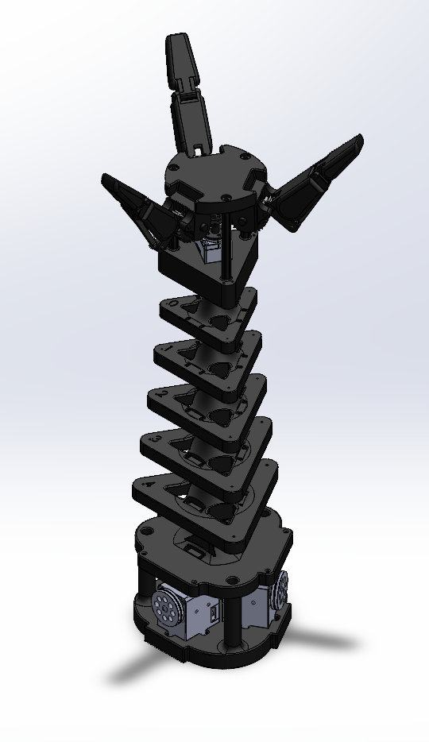
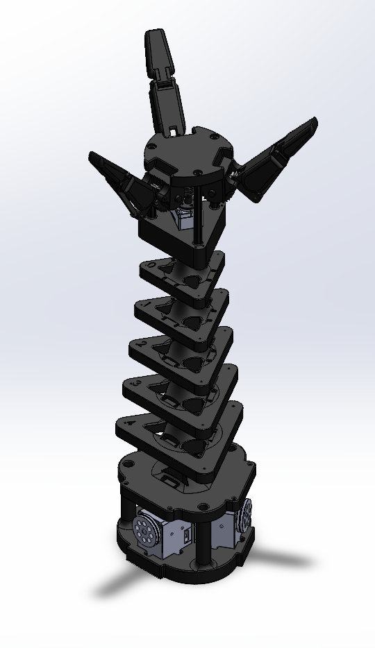

Project Overview
This ongoing research project at the University of Pennsylvania's GRASP Laboratory focuses on developing innovative dual-mode robotic systems capable of both precision manipulation and dynamic locomotion. Under the supervision of Dr. Nadia Figueroa in the Figueroa Robotics Lab, I am designing and prototyping robotic arms that can seamlessly transition between delicate object manipulation and robust locomotion support.
Technical Approach
The project explores two distinct design paradigms:
- Rigid Joint-Based System: Features custom universal joints and precision servo mechanisms with timing belt transmission and bevel gear coupling for high-precision control
- Cable-Actuated Continuum System: Utilizes distributed motor control with flexible vertebrae structures, providing enhanced adaptability and compliance
Key Innovations
The core innovation lies in the compliant 3-finger gripper design, which incorporates worm gear reduction and spring-based adaptive control. This allows for seamless transitions between:
- Delicate manipulation tasks requiring precise force control
- Robust ground contact support for locomotion
- Cooperative manipulation between multiple arms
Current Progress
As of April 2025, I have completed the initial mechanical design and fabrication of the first prototype. The system successfully demonstrates basic dual-mode functionality, with ongoing work focused on:
- Control algorithm development for smooth mode transitions
- Integration of tactile feedback systems
- Performance optimization for both manipulation and locomotion tasks
 
